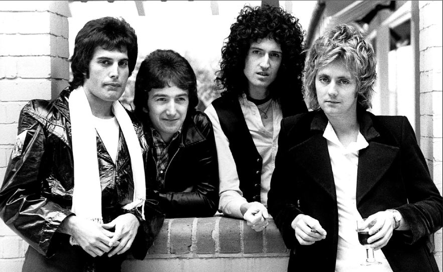

Queen
Banda británica de rock formada en 1970 en Londres.

Integrantes del grupo
Brian May
Freddie Mercury
John Deacon
Roger Taylor
Discografía
Grandes éxitos de Queen
Año
Disco
1975
A Night at the Opera
1986
A Kind of Magic
1989
The Miracle
"A Kind of Magic" fue el álbum más exitoso.
Sitio web oficial
https://www.queenonline.com/